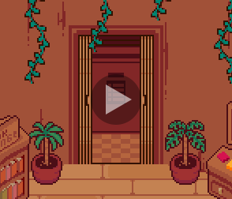
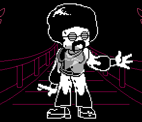
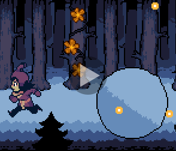
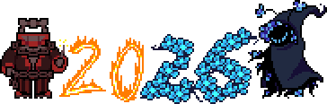
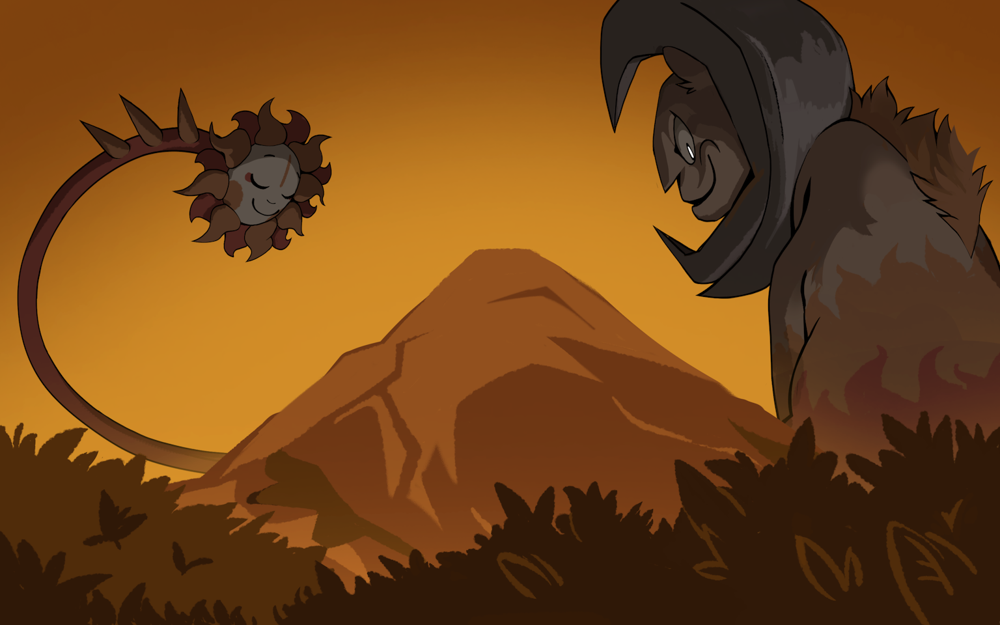

NEWSLETTER
Issue 3 (Second Anniversary)
Art by Frigadae
It's the start of another new year, which means Undertale Wildfire is celebrating its second anniversary!
2025 was a great year, not only for Undertale Wildfire, but for the Undertale and Deltarune fandom as a whole. Like most of you (if not all of you!), we too played Chapters 3 & 4 when they were released in the middle of the year. Suffice to say, not only were they highly enjoyable to play after so many years of eager anticipation, but they helped inspire and shape our own work as well.
While we haven't released anything playable in the past year, rest assured that we're all still working hard on the game. Over the course of 2025, we've released a few updates and teasers to you all. There's been music, fights, and even a letter from an interesting individual...
... seriously, though, when Mr. Sunshine appeared in the anniversary stream? A collective mixture of "What, that's so cool!!" and "Toby, c'mon, we're doing something with this guy now!!" was felt among the team. For those unaware, Mr. Sunshine originated as an unused enemy design that appeared in the Undertale artbook. Guess he's sorta used now, huh? But, as an Old Man once put it: others can always step up, take the pen, and write their own stories. We're happy to see Toby ultimately implement the unused enemy in his own way, and we're still excited to bring our own interpretation to the design and breathe life into it.
Which brings us to: Wildfire's progress!
PROGRESS: OVERWORLD
At this point last year, we were still working on creating assets for and mapping out the overworld. But now? Snowdown is 100% tiled! All rooms (even the [REDACTED] room where [REDACTED] happens) are fully designed and in-engine, and many are populated with game content as well. Pretty neat, huh? Take a look at one of the locations you'll get to explore in Snowdown - the Stairway Tree:

PROGRESS: BATTLES
As we said in our first newsletter, we're aiming for Undertale Wildfire to have a stronger focus on combat than the original game did. That means we've been working on lots of enemy and boss encounters over the past year! Now, battles - especially bullet patterns - take time to do properly, and so not all of them are complete yet. However, our random encounters are all playable, and some minibosses and bosses are complete as well. Check out this funky guy you'll be groovin' with in Snowdown:

PROGRESS: EVENTS
Undertale's charm isn't just in its battles and touching moments, but also in the setpieces, puzzles, cutscenes, and FUN events scattered throughout the game. We're slowly but surely chipping away at content in all of these departments. Much of this is simple flavor text or chit-chat between characters, but there are more elaborate events as well; some might be more akin to, shall we say, getting a good cardio workout:

YOUR QUESTIONS, ANSERED
You may have seen us share a small form to fill out in December, in which you could ask questions to Undertale Wildfire's various characters. Well, we showed your questions to some of the fine folk of Snowdown, and here's what they had to say:
CONCLUSION

We'd like to thank everyone for their patience. We know that, between the Combat Demo and our occasional teasers over the last year, you're all eager to see the demo completed and finally play through Snowdown. Trust us, we want to get Snowdown out to you all too! While we can't commit to a release date quite yet, we're hoping to finish, test, and release the Snowdown demo sometime this year.
That said, the team as a whole is still quite active. The smaller, more numerous bits of writing, like item flavor text and NPC dialogue, are complete for Snowdown. The story scenes for each route in the second area of the game beyond Snowdown are all fully written as well (albeit under possible future scrutiny). Some art and tiling for the second area is also underway. The writing team's current focus is on fleshing out and writing the third area of the game. We're really excited about some of the stuff you'll get to see when the full game releases! It's just unfortunate that it will be years until then. Sometimes we think we must feel like Toby does, with everything his team has been working on for Deltarune but has to keep behind locked doors for the time being.
Well, thank you for reading! To be fully transparent, we likely won't share anything else major about Snowdown until the release of the demo. So, we hope this newsletter is enough to tide you over until the demo is in your hands.
We hope you all have a great year!

Art by emb3r